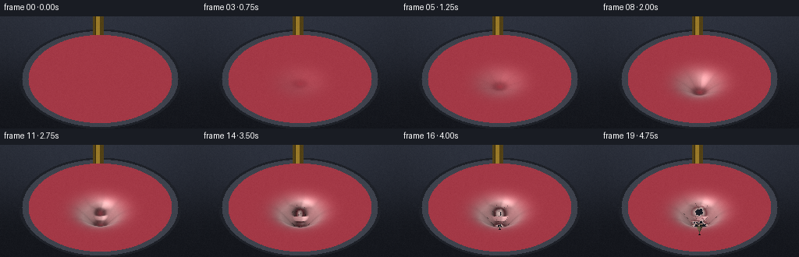
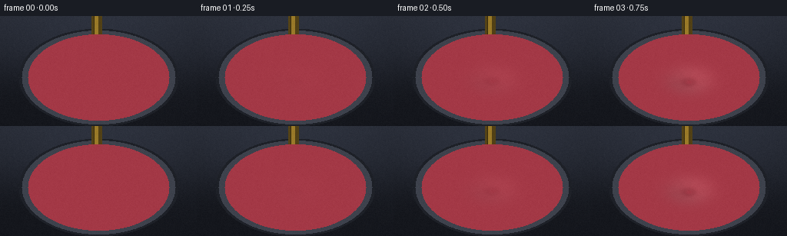
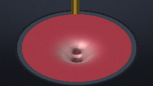

CODING AGENTS AS PIXEL WORLD MODELS
traex/Seed-2.1-Pro-0915 · phygen_022
点击播放 · 原生 RGB 像素
逐轮保存的候选
回放视频、检查图与代码变化。
每份候选均可单独播放。实际图片检查记录在下方工具轨迹中。
候选 01播放与检查图
点击播放 · 原生 RGB 像素


展开代码变化
--- 上一保存版本
+++ 本次保存版本
@@ -0,0 +1,285 @@
+"""Procedural RGB video: a pencil slowly pressing into a stretched rubber sheet.
+
+Pure numpy/PIL software rendering. The membrane is a displaced height field on
+a disk, viewed with an oblique orthographic projection and lit from analytic
+surface normals. The pencil is a faceted shaft + wood cone + graphite cone,
+composited with a per-pixel depth test. Late frames tear an irregular hole so
+the graphite tip visibly penetrates the outer layer.
+"""
+import numpy as np
+
+import artifact_io
+
+# ----------------------------------------------------------------------------
+# Output / scene constants
+# ----------------------------------------------------------------------------
+W, H, N, FPS = 256, 144, 20, 4.0
+
+CX, CY = 128.0, 80.0 # screen center of the hoop (pixels)
+K = 1.0 # world units per pixel
+R_HOOP = 92.0 # membrane radius (world units)
+RIM_W = 8.0 # metal hoop width
+TILT = np.deg2rad(38.0)
+SIN_T, COS_T = np.sin(TILT), np.cos(TILT)
+
+X0, Z0 = 0.0, 6.0 # pencil / dent center in membrane plane
+SIGMA = 16.0 # dent spread
+D_MAX = 30.0 # deepest dent before puncture
+HOLE_MAX = 7.0 # final torn-hole radius
+TIP_THRUST = 15.0 # how far the tip travels below the membrane
+
+# Pencil dimensions along its vertical axis (world units), measured from tip.
+R_SHAFT, R_GRAPHITE = 5.6, 1.35
+L_GRAPHITE, L_WOOD = 7.0, 15.0
+
+# Lighting
+LIGHT = np.array([-0.45, 0.80, 0.45])
+LIGHT /= np.linalg.norm(LIGHT)
+VIEW = np.array([0.0, SIN_T, COS_T])
+HALF = LIGHT + VIEW
+HALF /= np.linalg.norm(HALF)
+
+LATEX = np.array([170.0, 58.0, 72.0])
+LATEX_LIGHT = np.array([238.0, 214.0, 208.0])
+YELLOW = np.array([228.0, 181.0, 61.0])
+WOOD = np.array([216.0, 182.0, 138.0])
+GRAPHITE = np.array([58.0, 60.0, 70.0])
+
+# Fixed spatial grain so dither does not flicker between frames.
+_rng = np.random.default_rng(20261110)
+GRAIN = _rng.normal(0.0, 1.6, (H, W)).astype(np.float32)
+
+YY, XX = np.mgrid[0:H, 0:W].astype(np.float64)
+WORLD_X = XX - CX
+
+
+def smoothstep(edge0, edge1, x):
+ t = np.clip((x - edge0) / (edge1 - edge0), 0.0, 1.0)
+ return t * t * (3.0 - 2.0 * t)
+
+
+def membrane_height(x, z, depth, hole_r):
+ """Height field of the latex membrane (negative = pressed downward)."""
+ dx, dz = x - X0, z - Z0
+ r = np.hypot(dx, dz)
+ h = -depth * np.exp(-0.5 * (r / SIGMA) ** 2)
+ if hole_r > 0.0:
+ ang = np.arctan2(dz, dx)
+ irregular = 1.0 + 0.18 * np.sin(5.0 * ang + 1.3) + 0.10 * np.sin(9.0 * ang + 0.4)
+ hr = hole_r * irregular
+ # Curled-up torn lip catches the light.
+ h = h + 3.4 * np.exp(-0.5 * ((r - hr) / 2.1) ** 2)
+ return h
+
+
+def hole_radius_at(hole_r, x, z):
+ if hole_r <= 0.0:
+ return np.zeros_like(x)
+ ang = np.arctan2(z - Z0, x - X0)
+ return hole_r * (1.0 + 0.18 * np.sin(5.0 * ang + 1.3)
+ + 0.10 * np.sin(9.0 * ang + 0.4))
+
+
+def background():
+ """Dark studio backdrop with a soft glow and a floor shadow under the hoop."""
+ t = YY / (H - 1)
+ top = np.array([40.0, 44.0, 54.0])
+ bot = np.array([20.0, 22.0, 28.0])
+ img = top[None, None, :] * (1.0 - t[..., None]) + bot[None, None, :] * t[..., None]
+
+ glow = np.exp(-(((XX - CX) / 120.0) ** 2 + ((YY - 66.0) / 90.0) ** 2))
+ img += glow[..., None] * np.array([10.0, 11.0, 14.0])
+
+ shadow = np.exp(-0.5 * (((XX - CX + 10.0) / 112.0) ** 2
+ + ((YY - 104.0) / 30.0) ** 2))
+ img *= (1.0 - 0.35 * shadow[..., None])
+ return img
+
+
+def render_membrane(frame_i):
+ """Return color buffer, depth buffer, inside-membrane mask for one frame."""
+ t = frame_i / (N - 1)
+ depth = D_MAX * smoothstep(0.0, 0.75, t)
+ puncture = smoothstep(0.72, 1.0, t)
+ hole_r = HOLE_MAX * puncture
+ tip_y = -depth - TIP_THRUST * puncture
+
+ # Invert the oblique orthographic projection by fixed point:
+ # screen_up = h*cos(T) - z*sin(T) => z = (h*cos(T) - screen_up)/sin(T)
+ screen_up = CY - YY
+ z = -screen_up / SIN_T
+ x = WORLD_X
+ for _ in range(10):
+ h = membrane_height(x, z, depth, hole_r)
+ z = (h * COS_T - screen_up) / SIN_T
+
+ r_plan = np.hypot(x, z)
+ inside = r_plan <= R_HOOP
+
+ # Final height + analytic normals via central differences.
+ eps = 1.2
+ hc = membrane_height(x, z, depth, hole_r)
+ hx = membrane_height(x + eps, z, depth, hole_r)
+ hxm = membrane_height(x - eps, z, depth, hole_r)
+ hz = membrane_height(x, z + eps, depth, hole_r)
+ hzm = membrane_height(x, z - eps, depth, hole_r)
+ dhdx = (hx - hxm) / (2.0 * eps)
+ dhdz = (hz - hzm) / (2.0 * eps)
+ normal = np.stack([-dhdx, np.ones_like(x), -dhdz], axis=-1)
+ normal /= np.linalg.norm(normal, axis=-1, keepdims=True)
+
+ diff = np.clip(normal @ LIGHT, 0.0, 1.0)
+ spec = np.clip(normal @ HALF, 0.0, 1.0) ** 26
+ shade = 0.34 + 0.78 * diff
+
+ col = LATEX[None, None, :] * shade[..., None]
+ col += (spec[..., None] * 0.65) * np.array([255.0, 250.0, 245.0])
+
+ # Rim/back light for silhouette sheen.
+ rim = np.clip(1.0 - normal @ VIEW, 0.0, 1.0) ** 3
+ col += rim[..., None] * np.array([34.0, 26.0, 30.0])
+
+ # Stress whitening where the latex is most stretched (steep slopes).
+ strain = np.clip(np.hypot(dhdx, dhdz) * 1.15, 0.0, 1.0)
+ col = col * (1.0 - 0.55 * strain[..., None]) + LATEX_LIGHT * (0.55 * strain[..., None])
+
+ # Faint radial stretch creases around the point of load.
+ dx, dz = x - X0, z - Z0
+ r = np.hypot(dx, dz)
+ ang = np.arctan2(dz, dx)
+ crease_win = np.exp(-0.5 * ((r - 11.0) / 15.0) ** 2) * (depth / D_MAX)
+ crease = (0.5 + 0.5 * np.cos(9.0 * ang + 0.7)) ** 6
+ col *= (1.0 - 0.10 * crease_win * crease)[..., None]
+
+ # Ambient occlusion inside the dent and a contact ring around the pencil.
+ deep = np.clip(-hc / D_MAX, 0.0, 1.0) * (depth / D_MAX)
+ col *= (1.0 - 0.30 * deep)[..., None]
+ contact = np.exp(-0.5 * ((r - 6.2) / 3.0) ** 2) * (depth / D_MAX)
+ col *= (1.0 - 0.45 * contact)[..., None]
+
+ # Tear: irregular hole mask, pale torn lip and short radial cracks.
+ hr = hole_radius_at(hole_r, x, z)
+ torn = (hole_r > 0.0) & (r < hr)
+ lip = (hole_r > 0.0) * np.exp(-0.5 * ((r - hr) / 1.7) ** 2)
+ col = col * (1.0 - 0.8 * lip[..., None]) + LATEX_LIGHT * (0.8 * lip[..., None])
+ if hole_r > 0.0:
+ crack_ang = np.abs(np.arctan2(np.sin(ang * 7.0 + 0.4), np.cos(ang * 7.0 + 0.4)))
+ crack = (crack_ang < 0.10) * (r > hr) * (r < hr + 15.0)
+ col[crack] *= 0.55
+
+ depth_buf = hc * SIN_T + z * COS_T
+ depth_buf = np.where(inside, depth_buf, np.inf)
+ mask = inside & (~torn)
+
+ # Metal hoop (annulus outside the membrane), simple directional shading.
+ band = (r_plan > R_HOOP) & (r_plan <= R_HOOP + RIM_W)
+ metal = np.array([58.0, 62.0, 72.0]) * (0.75 + 0.4 * diff[..., None])
+ metal += (spec ** 8)[..., None] * np.array([120.0, 125.0, 135.0])
+ outer = (r_plan > R_HOOP + RIM_W) & (r_plan <= R_HOOP + RIM_W + 4.0)
+ metal_dark = np.array([30.0, 33.0, 40.0])
+
+ img = background()
+ img[band] = metal[band]
+ img[outer] = metal_dark
+ img[mask] = col[mask]
+ return img, depth_buf, mask, depth, hole_r, tip_y
+
+
+def render_pencil(img, depth_buf, membrane_mask, depth, hole_r, tip_y):
+ """Composite the vertical pencil with a per-pixel depth test."""
+ sx0 = CX + X0
+ half = R_SHAFT + 1.5
+ cols = np.arange(max(0, int(sx0 - half - 1)), min(W, int(sx0 + half + 2)))
+ rows = np.arange(H)
+ rr, cc = np.meshgrid(rows, cols, indexing="ij")
+ px = cc - sx0 # x offset from pencil axis
+ screen_up = CY - rr
+
+ # Near-side cylindrical surface (smallest z is closest to the camera).
+ pz0 = -np.sqrt(np.clip(R_SHAFT ** 2 - px ** 2, 0.0, None))
+ y_guess = (screen_up + (Z0 + pz0) * SIN_T) / COS_T
+ q = y_guess - tip_y
+
+ graphite = (q >= 0.0) & (q < L_GRAPHITE)
+ wood = (q >= L_GRAPHITE) & (q < L_GRAPHITE + L_WOOD)
+
+ rad = np.zeros_like(px)
+ rad[graphite] = R_GRAPHITE * (1.0 - q[graphite] / L_GRAPHITE)
+ wq = (q[wood] - L_GRAPHITE) / L_WOOD
+ rad[wood] = R_GRAPHITE + (R_SHAFT - R_GRAPHITE) * wq
+ rad[q >= L_GRAPHITE + L_WOOD] = R_SHAFT
+
+ cone = graphite | wood
+ on_cone = cone & (np.abs(px) <= rad)
+
+ # Hexagonal shaft: near flat face normal varies with screen offset.
+ face = np.round(np.arctan2(0.0, px) / (np.pi / 3.0)) * (np.pi / 3.0)
+ hex_half = R_SHAFT * np.cos(np.pi / 6.0) / np.maximum(np.cos(face), 1e-6)
+ shaft = q >= L_GRAPHITE + L_WOOD
+ on_shaft = shaft & (np.abs(px) <= hex_half)
+
+ frag = on_cone | on_shaft
+ pz = np.where(on_shaft,
+ -np.sqrt(np.clip(R_SHAFT ** 2 - px ** 2, 0.0, None)),
+ -np.sqrt(np.clip(rad ** 2 - px ** 2, 0.0, None)))
+ y_world = (screen_up + (Z0 + pz) * SIN_T) / COS_T
+ q = y_world - tip_y
+ graphite = (q >= 0.0) & (q < L_GRAPHITE)
+ wood = (q >= L_GRAPHITE) & (q < L_GRAPHITE + L_WOOD)
+ shaft = q >= L_GRAPHITE + L_WOOD
+ frag = frag & (q >= 0.0)
+
+ phi = np.arctan2(pz, px)
+ # Smooth cone normals, lightly faceted to match the sharpened wood.
+ cone_n = np.stack([0.92 * np.cos(phi), np.full_like(phi, 0.38),
+ 0.92 * np.sin(phi)], axis=-1)
+ cone_n /= np.linalg.norm(cone_n, axis=-1, keepdims=True)
+ facet_phi = np.round(phi / (np.pi / 3.0)) * (np.pi / 3.0)
+ wood_n = np.stack([0.9 * np.cos(facet_phi), np.full_like(phi, 0.42),
+ 0.9 * np.sin(facet_phi)], axis=-1)
+ wood_n /= np.linalg.norm(wood_n, axis=-1, keepdims=True)
+ n_face = np.stack([np.cos(face), np.zeros_like(face), np.sin(face)], axis=-1)
+
+ nrm = np.where(shaft[..., None], n_face, cone_n)
+ nrm = np.where(wood[..., None], wood_n, nrm)
+ diff = np.clip(np.sum(nrm * LIGHT, axis=-1), 0.0, 1.0)
+ spec = np.clip(np.sum(nrm * HALF, axis=-1), 0.0, 1.0) ** 20
+
+ base = np.broadcast_to(YELLOW, nrm.shape).astype(float).copy()
+ base[wood] = WOOD
+ base[graphite] = GRAPHITE
+ # Painted yellow collar at the top of the sharpened cone.
+ collar = wood & (q > L_GRAPHITE + L_WOOD - 3.0)
+ base[collar] = YELLOW
+
+ c = base * (0.36 + 0.72 * diff)[..., None]
+ c += spec[..., None] * np.array([255.0, 248.0, 225.0]) * 0.55
+ c[graphite] *= 0.55 + 0.45 * diff[graphite][..., None]
+
+ # Hexagon facet seams and silhouette outline.
+ seam = np.abs(np.arctan2(np.sin(phi - face), np.cos(phi - face))) < 0.06
+ c[shaft & seam] *= 0.55
+ edge = np.abs(np.abs(px) - rad) < 0.5
+ c[frag & edge] *= 0.65
+
+ dep = y_world * SIN_T + (Z0 + pz) * COS_T
+ sub_mem = depth_buf[rr, cc]
+ visible = frag & (dep < sub_mem - 0.02)
+ img[rr[visible], cc[visible]] = c[visible]
+
+
+def render_frame(i):
+ img, depth_buf, mem_mask, depth, hole_r, tip_y = render_membrane(i)
+ render_pencil(img, depth_buf, mem_mask, depth, hole_r, tip_y)
+ img += GRAIN[..., None]
+ return np.clip(img, 0.0, 255.0).astype(np.uint8)
+
+
+def main():
+ frames = np.stack([render_frame(i) for i in range(N)], axis=0)
+ artifact_io.save(frames, ".")
+ print(f"saved {N} frames {W}x{H} at {FPS} fps")
+
+
+if __name__ == "__main__":
+ main()
可观测工具轨迹
实际执行的命令与返回图片。
命令 1exit 0
/bin/bash -lc 'ls -la && cat prompt.txt && echo "=== RULES ===" && cat GENERATION_RULES.md && echo "=== SPEC ===" && cat task_spec.json'
命令 2exit 0
/bin/bash -lc 'cat artifact_io.py && echo "=== PLAYER ===" && head -50 player_template.html'
命令 3exit 1
/bin/bash -lc 'cd . && python generate.py && ls -la'
命令 4exit 0
/bin/bash -lc 'cd . && python generate.py && ls -la'
视觉工具实际返回图片 1

视觉工具实际返回图片 2

保存候选 1 份；完成命令 4 次；可验证图片返回 2 张。原始 API 响应与完整日志保留在本地。